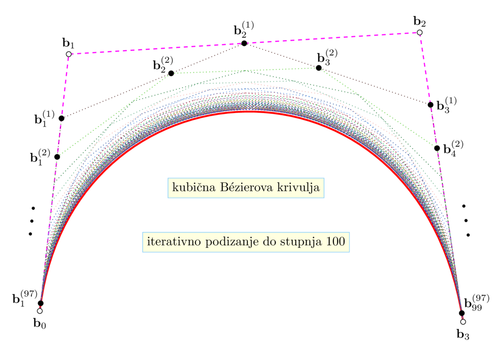
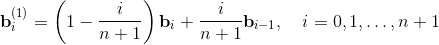
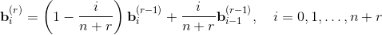
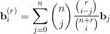
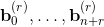
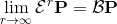

Podizanje stupnja Bézierove krivulje
kontrolne točke od Bézierove krivulje
nove kontrolne točke

Novi kontrolni poligon leži unutar konveksne ljuske starog kontrolnog poligona.
Iterativno podizanje stupnja Bézierove krivulje


je kontrolni poligon s vrhovima 
konvergencija je spora 